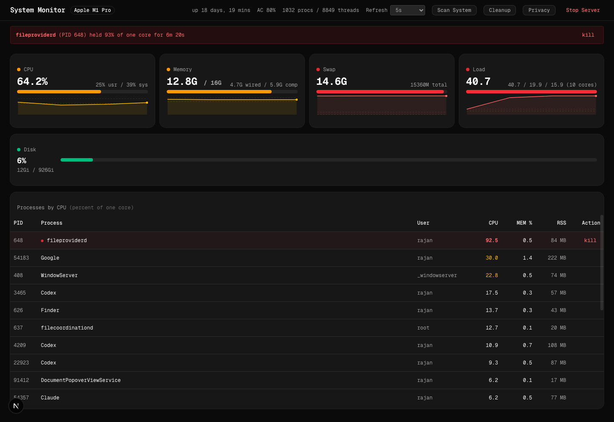

The idea in one line. Turn the dashboard into a bench instrument: a 1980s test-bench and control-room language (vector scopes, LED bar meters, annunciator lamps, seven-segment readouts) built with 2026 craft (variable fonts, oklch colour, springs, translucent layers), where every process can explain itself and every change to the machine is logged and judged.
Three workstreams. Visual identity ("Phosphor"), richer information (a process inspector with explainers and investigation tools), and constant security monitoring (baseline, drift, posture lamps, a timeline). They ship in five phases over roughly six to eight weeks of one engineer's time; phase A is usable on its own.
The rule that keeps it tasteful. The 80s lives in the instruments, not the wallpaper. No scanlines, no boot screens, no glitch loops by default. One memorable element, the live vector scope, and everything around it quiet.

What works. The data pipeline is sound: argv-only probes with typed outcomes, a rolling five-minute history, sustained-load alerts, a loopback-only trust boundary, and safe kill and cleanup actions. The page already has a terminal temperament, so the direction below is an evolution, not a rewrite.
What holds it back.
sampler.ts:94-97; alert duration is shown only in the banner; connections are computed in the privacy scan but never joined to the process rows.The machine is a signal and the app is the bench it is probed on. The reference world is Tektronix scopes, HP bench meters, airliner annunciator panels, the Vectrex, Trinitron menus and Braun's radio faces: instruments built to be read at a glance for eight hours a shift. That world is monochrome phosphor with one or two alarm colours, discrete segments rather than smooth gradients, and typography engraved on bezels. It maps unusually well onto a security monitor: posture is a row of lamps, load is a meter, events are a chart recorder.
What we take from now: variable fonts with real tabular numerals, oklch colour so the phosphor hues survive light mode, translucent inspector layers, spring motion that can be interrupted, and accessibility as a floor.
| Role | Dark ("night shift") | Light ("daylight lab") | Rule |
|---|---|---|---|
| Surface | Tube #050608, bezel #14171C, bezel edge 1px #262B33 | Paper #ECEAE3, bezel #DEDBD2, edge #C9C5B8 | Two surface levels only. Bezels are matte; no drop shadows. |
| Signal | Phosphor #5DFF9E | Phosphor dark #1E8F5A | Traces, meters, "normal" states. The dominant hue. |
| Caution | Amber #FFB000 | Amber dark #B06E00 | Warn thresholds, stale data, unknown publisher. |
| Cool | Cathode #37D7FF | #0A7FA8 | Network and selection. Never for status. |
| Alarm | Alarm #FF3D8A | #C21C5E | Critical only. Appears at most in one place at a time. |
| Text | Ivory #E8E6DF, muted #8B9098 | Ink #1B1D22, muted #5B6270 | Ivory not white: phosphor tubes were never white. |
Contrast: phosphor on tube 15.6:1, amber on tube 11.9:1, cathode on tube 12.8:1, alarm on tube 6.3:1, muted on tube 5.4:1. All pass AA for body text; alarm is reserved for large text and lamps.
@theme {
--color-tube: oklch(0.13 0.005 260); --color-bezel: oklch(0.19 0.008 260);
--color-phosphor: oklch(0.90 0.20 155); --color-amber: oklch(0.80 0.17 75);
--color-cathode: oklch(0.83 0.13 220); --color-alarm: oklch(0.68 0.24 355);
--color-ivory: oklch(0.92 0.008 90); --color-muted: oklch(0.63 0.01 250);
--font-display: "Chakra Petch", "Geist Sans", system-ui;
--font-data: "Geist Mono", ui-monospace;
--font-segment: "DSEG7 Classic", "Geist Mono";
}
font-variant-numeric: tabular-nums and size-specific tracking (+0.01em at 11px, 0 at 13px).font-src 'self') for the few display moments: panel titles engraved on bezels and the four vital numerals. Squared terminals and a slight forward lean carry the era without cosplay.┌──────────────────────────────────────────────────────────────────────────────┐ │ SYSTEM MONITOR M1 Pro up 18d [FIREWALL][SIP][FILEVAULT][GATEKEEPER][XPROTECT][UPDATES] │ ├──────────────┬───────────────────────────────────────────────┬───────────────┤ │ CPU 61.2 │ │ │ │ ▮▮▮▮▮▮▯▯▯▯ │ ╱╲ ╱╲___╱╲ cpu ─── │ INSPECTOR │ │ MEM 13/16 │ ___╱ ╲__╱ ╲___╱ mem ─── │ (drawer) │ │ ▮▮▮▮▮▮▮▮▯▯ │ ───────────────────────── net ─── │ fileproviderd│ │ SWAP 14.1 │ ······························ disk ··· │ PID 648 │ │ ▮▮▮▮▮▮▮▮▮▮ │ │ Apple, signed│ │ LOAD 10.5 │ vector scope, 5 min, four traces, afterglow │ "the daemon │ │ ▮▮▮▮▮▮▮▮▮▮ │ │ controlling │ ├──────────────┴───────────────────────────────────────────────┤ file │ │ Processes Network Persistence Permissions Timeline │ provider…" │ │ PID Process Publisher CPU MEM Conns ▲ │ parent chain │ │ 648 fileproviderd ◆ Apple 72.0 0.4 3 │ connections │ │ … │ actions │ └───────────────────────────────────────────────────────────────┴───────────────┘
A three-position switch in the header, persisted locally, applied as data-retro="0|1|2" on the root so it is one attribute for CSS to key from.
| Level | What changes | Default for |
|---|---|---|
| 0 clean | Phosphor palette, Chakra Petch titles, smooth meters. No segment numerals, no bezels. | Light mode, reduced-motion users |
| 1 instrument | Adds seven-segment vitals, 10-segment LED meters, engraved bezel titles, annunciator lamp bevels. | Dark mode (the default) |
| 2 tube | Adds faint phosphor bloom on traces, 2% scanline texture, a 0.5° barrel on the scope only. Costs GPU; auto-disabled on battery under 20%. | Nobody by default; it is the fun setting |
The near-black-plus-one-acid-accent look is a known generated-page tell, and the current UI is already close to it. The plan avoids it in three ways: the base is ivory-on-tube with a warm cast rather than white on #111; the palette has a dominant signal hue plus three functional hues with strict jobs, not one accent used for everything; and the memorable element is a working instrument (the scope) rather than a gradient. The light "daylight lab" theme is a first-class mode so the product does not depend on darkness for its identity. No eyebrow labels, no middle-dot meta strings, no arrows on buttons.
Verdicts: ship = in the roadmap · prototype = build a spike, keep if it earns its place · park = fun, but does not serve the job.
| Idea | What it is | Verdict | Why |
|---|---|---|---|
| Vector scope hero | Four vitals as phosphor traces with afterglow on one grid, alert ticks on the axis | ship | Replaces four sparklines with one glanceable instrument; the identity piece |
| Annunciator lamps | Security posture as a strip of labelled indicator lamps | ship | Airliner idiom, instantly readable, maps 1:1 to posture checks |
| LED bar meters | Discrete 10-segment meters instead of smooth bars, warn/crit segments coloured | ship | Thresholds become visible steps; cheaper to read than a percentage |
| Seven-segment vitals | DSEG numerals for CPU, memory, swap, load at retro ≥ 1 | ship | The era in four places, with a plain-text fallback |
| Tape scrubber | Cassette-counter style scrubber to rewind the scope and table to any point in the last hour | prototype | Real investigative value ("what was running when it spiked?"); needs a per-process history buffer |
| Split-flap event log | Solari board treatment for the Timeline's newest rows | prototype | Delightful and legible; keep only if it stays under 200 ms per flip and honours reduced motion |
| Radar sweep on poll | A faint sweep across the table each poll, new rows lit as it passes | prototype | Makes "new since last poll" visible without a badge; risk of noise |
| Process constellation | Parent-child tree drawn as a vector graph (launchd at centre) | prototype | Shows helper sprawl and odd parents; needs to stay readable above 300 processes |
| Command palette | ⌘K palette: jump to PID, kill, inspect, switch view, toggle retro | ship | Keyboard-first operators; cheap with Base UI |
| Keyboard bench | j/k rows, i inspect, x kill, / filter, 1–5 tabs | ship | Eight-hour-shift ergonomics |
| Identity badge inspector | The inspector header styled as a magnetic-stripe ID card: publisher, signature, notarisation, quarantine | ship | Makes trust status the first thing seen, which is the security point |
| Printout export | Export a shift report as a dot-matrix styled plain-text or PDF "printout" | prototype | Useful for sharing findings; the styling is free once the content exists |
| Teletext explainer pages | Explainers rendered as Ceefax-style pages with page numbers | park | Charming, but fixed-width block text hurts reading prose |
| Boot POST screen | Memory-count style splash on first load | park | Adds latency to the thing people open to check latency |
| CRT mode | Scanlines, bloom, barrel distortion | prototype | Only as retro level 2, scope only, off by default |
| Modem or Geiger sounds | Audio on connections or events | park | Single optional tick is enough; anything more becomes alarm fatigue |
| Winamp skins | User-installable themes | park | Maintenance cost for no monitoring value |
| Isometric process city | Processes as buildings sized by memory | park | Pretty; answers no question the table cannot |
| Lissajous CPU vs memory | XY scope figure | park | Looks great, reads as nothing |
| Night-shift auto-dim | Lower luminance after 22:00 | park | The OS already does this |
| Menu-bar mini window | A compact /mini route sized for the existing LSUIElement launcher: lamps plus one meter | ship | This is what "constant monitor" means day to day |
| Chart-recorder Timeline | Events drawn on a scrolling paper strip with pen colours per category | ship | The Timeline needs a visual anyway; the recorder metaphor is honest about time |
Clicking any process row (or pressing i) opens the inspector. It answers four questions in order: who is this, what does it do, what is it doing right now, and what can I do about it.
| Field | Source | Cost measured today |
|---|---|---|
| Full path, arguments (sanitised) | Already in ps aux; stop stripping it | none |
| Parent chain to launchd, start time, elapsed | Add ppid,lstart,etime to the existing ps call | none |
| Publisher, signed / ad-hoc / unsigned, notarised, bundle identifier, team ID | codesign -dv --verbose=2 <path> and spctl --assess, cached per path with a 1 h TTL | 40 ms per new path |
| Quarantine flag (downloaded, never assessed) | xattr -p com.apple.quarantine | < 5 ms |
| How it was launched | Match the path against LaunchAgents/Daemons plists (already listed by the scan), login items via sfltool, otherwise "started by <parent>" | none beyond the scan |
| Location class | Path bucket: /System, /usr, /Applications, ~/Applications, ~/Library, /tmp or ~/Downloads (flag) | none |
The identity header is the badge: name, publisher, and one of five trust states rendered as a lamp: Apple system, Signed and notarised, Signed, Ad-hoc or unsigned, Unsigned and quarantined. This state also becomes a column and a filter in the table.
Three layers, all offline and instant, so the answer is always present:
man -w name then the DESCRIPTION paragraph gives, for example, "fileproviderd is the daemon controlling the interaction between extensions and filecoordinationd." Zero maintenance and authoritative.An optional fourth layer, off by default and clearly labelled: ask a model. It sends only name, path, publisher and parent chain, never arguments or hostnames, and the response is cached. Given the product's privacy stance, this stays opt-in per session.
top -stats pid,power, threads, and open file and socket counts from lsof -p on demand.lsof -iTCP listing (75 ms for 122 connections today), each resolved, tracker-matched with the existing map, and marked "new destination" if not in the baseline.| Action | Mechanism | Guardrail |
|---|---|---|
| Reveal in Finder | open -R <path> | Path from the server's own process record, never from the client |
| Suspend / resume | SIGSTOP / SIGCONT via the existing identity-checked signal path | Reversible alternative to kill; same ownership check |
| Lower priority | renice +10 -p on own processes | Only positive nice values without root |
| Sample for 3 s | sample <pid> 3, show the top of the call tree | Own processes only; output truncated and never executed |
| Assess | spctl --assess --type execute plus quarantine read | Read-only |
| Watch | Pin the process; any change in signature, path, connections or parent raises a Timeline event | Persisted locally |
| Kill | Existing action | Existing confirmation and identity re-check |
The current product is a snapshot with two on-demand scans. A monitor needs memory: a baseline of what the machine normally looks like, a diff every cycle, and a place where changes accumulate. Everything below is read-only, argv-based, non-root, and stays on the machine.
| Lamp | Probe (verified on this Mac) | Today's value here |
|---|---|---|
| Firewall, stealth | /usr/libexec/ApplicationFirewall/socketfilterfw --getglobalstate --getstealthmode | Firewall off |
| SIP | csrutil status | enabled |
| Gatekeeper | spctl --status | enabled |
| FileVault | fdesetup status | on |
| XProtect version and date | Info.plist under /Library/Apple/System/Library/CoreServices/XProtect.bundle | to read |
| Updates pending | softwareupdate -l, cached 6 h (slow, network) | to read |
| Remote access | launchctl print system/com.openssh.sshd, Screen Sharing agent presence | to read |
| Secure boot, system extensions | systemextensionsctl list, kmutil showloaded | to read |
On first run (and on demand) the app snapshots the machine to ~/Library/Application Support/system-monitor/baseline.json. Every cycle computes a diff; every difference is an event with a severity from a small rule table.
| Surface | Snapshot from | Cycle | Example event |
|---|---|---|---|
| Processes by path and publisher | existing ps plus signature cache | every poll | "New unsigned binary running from ~/Downloads" (alarm) |
| Outbound destinations | lsof -iTCP resolved | every poll | "Terminal opened a connection to a host never seen before" (amber) |
| Listening ports | lsof -iTCP -sTCP:LISTEN | every poll | "Port 5900 now listening (screen sharing)" (amber) |
| Persistence | LaunchAgents/Daemons plists hashed, login items via sfltool, cron and periodic, configuration profiles via profiles list | 60 s | "New launch agent com.example.updater by unknown publisher" (alarm) |
| Permissions | existing TCC read (needs Full Disk Access) | 60 s | "Screen recording granted to Zoom at 14:02" (info) |
| Network configuration | scutil --dns, networksetup -getwebproxy, /etc/hosts hash | 60 s | "DNS resolver changed to 185.x.x.x" (alarm) |
| Accounts | dscl . list /Users, admin group members | 5 min | "New admin user" (alarm) |
| Credentials | ~/.ssh key inventory and permissions, authorized_keys hash | 5 min | "authorized_keys changed" (alarm) |
| Extensions | system extensions, kernel extensions, browser extension folders | 5 min | "New Chrome extension installed" (info) |
| Privileged activity | log show --last 5m --predicate 'process == "sudo"' where readable | 5 min | "sudo used by rajan: 3 commands" (info) |
A chart-recorder view: time runs downward, one pen colour per category, each event a row with severity, subject, what changed, and a one-line judgement from the rule table. Events link to the inspector. Filters mirror the table's. Retention is local and configurable (default 30 days, SQLite via Bun's built-in driver).
osascript's display notification, deduplicated per subject for 10 minutes./mini route, 320 × 120, showing the lamps, one meter, and the last event, opened in a small window. This is the constant-monitor surface.| View | Purpose | Replaces |
|---|---|---|
| Bench (default) | Lamps, vitals rail, scope, process table, inspector | Today's whole page |
| Network | Connections by process and by destination, listening ports, tracker matches, new destinations | Privacy scan's connection findings |
| Persistence | Launch agents and daemons, login items, profiles, extensions, each with publisher and "new since baseline" | Scan's startup findings, privacy scan's persistence check |
| Permissions | TCC grants per app with change history | Privacy scan's permission list |
| Timeline | Chart-recorder event log | Nothing today |
| Cleanup | Existing catalogue with a file-list preview per item | Cleanup panel |
| Mini | Compact always-on window | Nothing today |
| Phase | Scope | Depends on | Effort |
|---|---|---|---|
| A. Foundation | Tokens and both themes, Chakra Petch and DSEG self-hosted, bench layout shell, tab views, inspector drawer with springs and reduced-motion path, sortable and filterable table, command palette and keys. Data: stop stripping paths; add ppid, lstart, etime to ps; signature cache; trust lamp column. | the build plan's step 1 (gates) so the refactor is safe | 1.5 weeks |
| B. Instruments | Vector scope on canvas with afterglow, LED meters, seven-segment vitals, annunciator strip with the eight posture probes, retro intensity switch. | A | 1 week |
| C. Explainers | Man-page reader, knowledge base (first 250 entries), heuristics, per-process history ring buffer, live behaviour panel, investigation actions (reveal, suspend, renice, sample, assess, watch). | A | 1.5 weeks |
| D. Monitor | Baseline store, drift rules, Timeline view with SQLite retention, Network and Persistence and Permissions views, notifications, mini window. | A, C (trust states feed the rules) | 2 weeks |
| E. Delight | Tape scrubber, split-flap Timeline rows, radar sweep, printout export, retro level 2, constellation graph spike. Keep what earns its place. | B, D | 1 week, optional |
Each phase ends with the smoke and QA gates green and new tests for every new probe parser, in line with the build improvement plan. Phase A alone is a visible upgrade; phases B and C can run in parallel.
@theme; components keep Base UI primitives. Status colours move out of components into the four functional hues.bun:sqlite; nothing in the repo directory.pool.ts) keeps concurrent codesign calls at four.This section applies Apple's fluid-interface principles (Designing Fluid Interfaces, WWDC 2018; Principles of Great Design, WWDC 2026) to every interactive surface in the plan. The through-line: motion starts from the current on-screen value, inherits the user's velocity, projects momentum forward, and can be grabbed and reversed at any instant. Section 2's "Motion and sound" notes are superseded by the values here.
pointerdown, not on click. Rows lift to the bezel tone in under 16 ms; the kill and suspend controls show their pressed state instantly and commit on release, with cancel-by-dragging-away.| Surface | Gesture | Behaviour |
|---|---|---|
| Inspector (desktop, right drawer) | Drag the left edge to resize; swipe right to dismiss | Tracks the pointer 1:1 with the grab offset respected. Release velocity decides commit or reverse (sign, not position). Grabbing it mid-animation takes over from the live transform with no jump. |
| Inspector (narrow, bottom sheet) | Drag anywhere on the header | Three detents: peek (identity only), half (identity and explainer), full. Momentum projection picks the detent nearest the projected rest point; rubber-banding above full and below peek. |
| Tape scrubber | Drag the counter or the scope's time axis | 1:1 with the pointer; on release, decelerates with the projection function and snaps to the nearest sample. Scope and table update continuously during the drag, never only at the end. |
| Table rows | Swipe left (touch) reveals suspend and kill | Reveal tracks the finger; a fast flick past 40% commits open. Hysteresis of 10 px before the row commits to horizontal instead of scroll. |
| Workbench tabs | Tap, or horizontal swipe on touch | Content pans with the finger between tabs; the indicator follows on a spring that re-targets from its current position if the user changes mind mid-swipe. |
| Retro switch | Tap or drag the knob | Knob tracks the pointer; the theme attribute flips at the midpoint so the change lands on the same frame as the knob crossing it. |
Implementation rules: Pointer Events with setPointerCapture; keep the last four positions with timestamps for release velocity; decompose the sheet's drag into independent X and Y springs; never lock input during a transition; animate transform and opacity only, with will-change set on pointer-down and cleared on settle.
| Interaction | Damping | Response | Note |
|---|---|---|---|
| Inspector open and close (pointer, keyboard, palette) | 1.0 | 0.30 | No overshoot: nothing was thrown |
| Inspector released after a drag or flick | 0.80 | 0.30 | Overshoot is earned by the gesture's momentum |
| Bottom sheet detent change | 0.80 | 0.30 | Apple's sheet values |
| Tab indicator, filter chips, lamp state change | 1.0 | 0.25 | Fast, calm |
| Row reveal (suspend and kill) | 1.0 | 0.25 | Critically damped so the buttons land exactly |
| LED meter segments, seven-segment digits | none | none | Instruments step; they do not ease. A meter that glides is lying about the sample |
| Vector scope traces | none | none | Drawn per sample with afterglow; time is the animation |
| Command palette | 1.0 | 0.20 | Materialises: blur radius and scale animate together from the trigger's origin |
import { animate } from "motion";
// Inspector opened by click or keyboard: critically damped
animate(drawer, { x: 0 }, { type: "spring", bounce: 0, duration: 0.3 });
// Inspector released after a flick: hand off the pointer's velocity, allow a little overshoot
animate(drawer, { x: target },
{ type: "spring", bounce: 0.2, duration: 0.3, velocity: releaseVelocityPx });
// Where the flick will land, Apple's projection (deceleration 0.998 for scroll feel)
const project = (v, d = 0.998) => (v / 1000) * d / (1 - d);
const detent = nearestDetent(currentY + project(releaseVelocityPx));
// Rubber-band beyond the top detent
const band = (over, dim, k = 0.55) => (over * dim * k) / (dim + k * Math.abs(over));
transform-origin to the control that opened them; the lamp explainer grows out of its lamp.backdrop-filter: blur(20px) saturate(160%) over 72% tube colour, for the inspector, the command palette and the sticky header, with a 1 px lighter top edge so the material reads as catching light.| Signal | What changes |
|---|---|
prefers-reduced-motion: reduce | Every spring becomes a 150 ms cross-fade; scope afterglow becomes a plain line; the sync-loss bar becomes a static amber tick on the axis; radar sweep and split-flap are disabled. Detents still work by tap. |
prefers-reduced-transparency: reduce | Glass becomes opaque bezel; blur removed. |
prefers-contrast: more | Bezels gain a 1 px ivory border; muted text lifts to 7:1; lamps add a glyph (check, exclamation, cross) beside the label. |
| Text size | All spacing in rem; the rail and inspector widths in ch and rem so a 200% text setting reflows rather than clips. |
| Theme change | Dark to light eases over 300 ms to avoid the brightness jump. |
| Principle | Decision |
|---|---|
| Purpose | Parked ideas stay parked. The isometric city, skins and boot screen were cut because they spend attention without answering a question. |
| Agency | Suspend before kill; undo on every non-destructive action; rules can be silenced per subject; the retro switch and light theme are the user's call. |
| Responsibility | Nothing leaves the machine by default. The model explainer is opt-in per session and names exactly what it sends. Probes are read-only and argv-based. An unknown publisher is stated as unknown, not judged as malicious. |
| Familiarity | Lamps, meters and scopes are metaphors people already read; kill and cleanup keep their names and positions from the current app; Escape closes, Cmd-K opens, as everywhere on the Mac. |
| Flexibility | Desktop gets density and keyboard; touch gets the sheet and swipes; the mini window serves the glance case; columns can be hidden and reordered. |
| Simplicity | The common path (glance at lamps and scope, find the hog, inspect, suspend) is one level deep. Network, Persistence and Permissions are a level down. Adding the explainer is the kind of context that simplifies. |
| Craft | Every spring value, tracking value and colour role above is a defensible choice. Motion is reviewed frame by frame before phase B ships. |
| Delight | The emotion is calm confidence: the machine is understood and under control. The instruments deliver it; nothing is added on top. |
Walked through with Rajan; every item below is settled and supersedes the corresponding option text above.
| Decision | Outcome |
|---|---|
| Build pipeline sequencing | Gate fixes and CI hardening immediately; route and action tests before design phase A; DOM tests with phase A, axe with phase B; the three free TypeScript flags now, index-access as its own PR after A; pre-commit hooks, Prettier and knip: yes. |
| Concept and hue | Phosphor bench instrument; phosphor green as the dominant signal hue, amber for caution, magenta for alarm, cyan for network and selection. |
| Typography | Chakra Petch for titles and the four vitals, DSEG7 segments at retro level 1, Geist for everything else. |
| Retro and themes | Level 1 is the default; the daylight theme ships in phase A; level 2 tube mode ships as a toggle, off by default. |
| Hero and layout | Vector scope on canvas; bench layout on desktop. |
| Extras | Tape scrubber, printout export and CRT toggle promoted to ship. Split-flap and constellation stay prototypes. Radar sweep parked. All other parked ideas stay parked. |
| Explainers | Man pages, knowledge base and heuristics; Kai seeds the first 250 knowledge-base entries in phase C. The model-backed explainer is deferred until the offline layers show their gaps. |
| Inspector actions | All seven, with suspend offered before kill and undo on every non-destructive action. |
| Security monitor | All eight lamps, core four first. Drift surfaces staged: processes, destinations, ports and persistence, then accounts, credentials, extensions, sudo and DNS. SQLite storage, server-sent events, macOS notifications, mini window, 30-day retention. |
| Delivery order | Build step 1, then A, then B and C in parallel, then D, then E. |
| Immediate action | Build step 1 starts now on the current branch; a draft PR to main carries the README fix, both plans and the step 1 changes. |